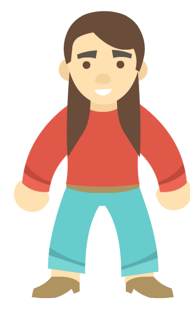

04TAKIM SALONUDEPARTMAN 2
Gönüllü Kulüp Asistanı
Senin yerine talimat verir, düzenli çalışarak ek puan kazandırır.
Enerji bekliyor
04TAKIM SALONUSenin yerine talimat verir, düzenli çalışarak ek puan kazandırır.
Enerji bekliyorHer talimatta daha fazla antrenman puanı kazandırır.
Enerji bekliyorAntrenman puanını artırır, gün sonunda ek puan kazandırır.
Enerji bekliyorTalimatların odalar arasındaki hareketini hızlandırır.
Enerji bekliyorMAHALLE LİGİ · Oyuncu başına 24 gelişim hakkı, en fazla 2 uzmanlık ve 1 temel yetenek. Kartlardaki çubuklar bu bölümün 35 puanlık sınırını gösterir.
Bu pozisyonda yedek oyuncu yok.